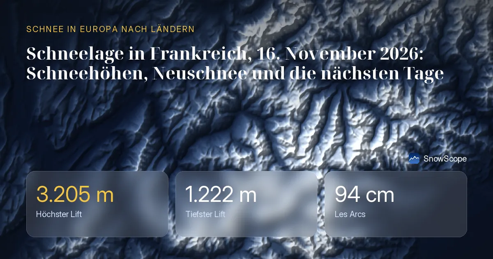
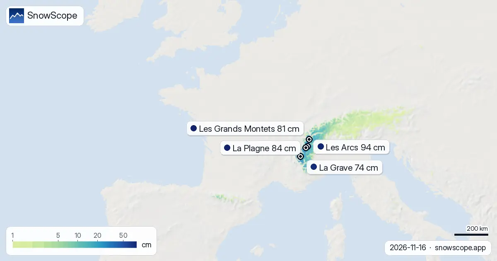

Schneelage in Frankreich, 16. November 2026: Schneehöhen, Neuschnee und die nächsten Tage
9.450 km² schneebedeckter Boden in Frankreich an diesem Montag, 570 km² weniger als gestern. Anders gesagt: 11 % des kartierten Berglands sind weiß.
Die Live-Schneeprognose für Les Arcs in der SnowScope-AppSchneehöhen, Pulverschnee-Alarme und 3D-Karte, gratis.
Schneebedeckung heute
Die 8.000 km² der Vorwoche sind um 1.450 km² gewachsen. Die Schneegrenze liegt um 1.900 m.
| Land | Weiß | Schneereichstes Skigebiet | Nächste 7 Tage |
|---|---|---|---|
| Frankreich | 11 % | Les Arcs | 105 cm |
| Schweiz | 53 % | Ovronnaz | 112 cm |
| Italien | 23 % | Monterosa Ski | 75 cm |

Neuschnee der letzten drei Tage
Die Dreitagessummen erreichen bis zu 29 cm, rund um das Mont-Blanc-Massiv, die französischen Südalpen und die französischen Nordalpen.
Am letzten Tag kamen bis zu 12 cm hinzu.
Mindestens 5 cm fielen auf etwa 8.980 km².

Schneehöhe nach Höhenlage
Je höher, desto mehr Schnee: 1.000-1.500 m: im Mittel unter 1 cm (1 % des Bodens weiß); 1.500-2.000 m: im Mittel 1 cm (33 % des Bodens weiß); 2.000-2.500 m: im Mittel 6 cm (72 % des Bodens weiß); über 2.500 m: im Mittel 25 cm (94 % weiß).
Skibedingungen
Neuschnee auf der Unterlage verspricht weiche Schwünge oben, unten bleibt es fleckig.
Die Vorhersage im Blick behalten: Der kommende Schnee kann das Bild schnell ändern.
Die Auswahl fürs Wochenende
Den meisten Schnee unter den Skigebieten des Landes hat Les Arcs: 94 cm.
Knapp dahinter: La Plagne (84 cm), Les Grands Montets (81 cm), La Grave (74 cm) und La Rosière (73 cm).
Les Arcs bekam in drei Tagen 29 cm und könnte bis Donnerstag, 19. November weitere 87 cm dazubekommen.
La Plagne bekam in drei Tagen 26 cm und könnte bis Donnerstag, 19. November weitere 79 cm dazubekommen.
Heute sind 103 von 224 Skigebieten in Frankreich weiß.
Was kommt
Schnee ist angesagt: bis zu 65 cm in drei Tagen, bis zu 105 cm innerhalb von sieben Tagen.
Der Freitag, 20. November sticht heraus, mit bis zu 33 cm an einem Tag.
Die zweite Woche bringt bis zu 44 cm dort, wo es am meisten schneit.
Tipps für Skifahrer
- Für die Straßen zu hoch gelegenen Skigebieten können Winterreifen oder Ketten nötig sein.
- Über der Waldgrenze kann der Schnee verfrachtet sein: Grate im Blick behalten.
- Vor der Anreise den Liftstatus des Skigebiets prüfen.
Zu diesen Zahlen
Die Schneehöhen der Skigebiete sind der meiste Schnee in den oberen Hängen am angegebenen Tag; es sind Schätzungen für eine Fläche, keine Messung an einem Punkt. Prognosen können sich ändern. Lies vor dem Freeriden immer den offiziellen Lawinenlagebericht.
Diesen Bericht zitieren
Für Forschung, Lehre oder Presse: Zahlen und Grafiken sind unter CC BY 4.0 mit dieser Quellenangabe frei nutzbar.
SnowScope (2026), Schneelage in Frankreich, 16. November 2026: Schneehöhen, Neuschnee und die nächsten Tage, https://snowscope.app/blog/de/2026/11/france-snow-report-16-november-2026.html, abgerufen am 2026-11-16
SnowScope (Atlas Labs). (2026, November 16). Schneelage in Frankreich, 16. November 2026: Schneehöhen, Neuschnee und die nächsten Tage. SnowScope snow reports. https://snowscope.app/blog/de/2026/11/france-snow-report-16-november-2026.html
BibTeX
@misc{snowscope2026francesnowreport16novemb,
author = {{SnowScope (Atlas Labs)}},
title = {Schneelage in Frankreich, 16. November 2026: Schneehöhen, Neuschnee und die nächsten Tage},
year = {2026},
month = nov,
howpublished = {\url{https://snowscope.app/blog/de/2026/11/france-snow-report-16-november-2026.html}},
note = {Published 2026-11-16 20:42 UTC; accessed 2026-11-16}
}· CC BY 4.0 · Methoden, Daten und Werkzeuge →
Les Arcs: Schnee und Temperatur nach Höhe, dieser Winter vs letzter (Werkzeuge) →
Les Arcs folgen
Gratis: eine Nachricht, wenn Neuschnee kommt, und jeden Morgen die Vorhersage.